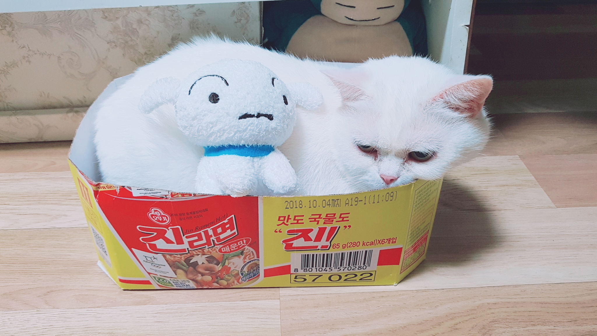

Siro
1.Intro
2.Picture
3.Video

이름 : 흰둥이
성별/중성화유무 : 여/Yes
나이 : 5살
몸무게 : 4kg
입양날짜 : 2018.04.15
종 : 페르시안
성격 : 매우 온순, 할퀴거나 물거나 때리지 않는다
좋아하는 것 : 닭고기, 소고기 등의 고기 종류 간식
싫어하는 것 : 참치캔 등 생선 종류 간식
질환 유뮤 : Yes/귀 진드기 경험 후 귀지가 많이 생긴다
현재 자취방에서 키우고 있는 예쁜 우리 아이입니다♥